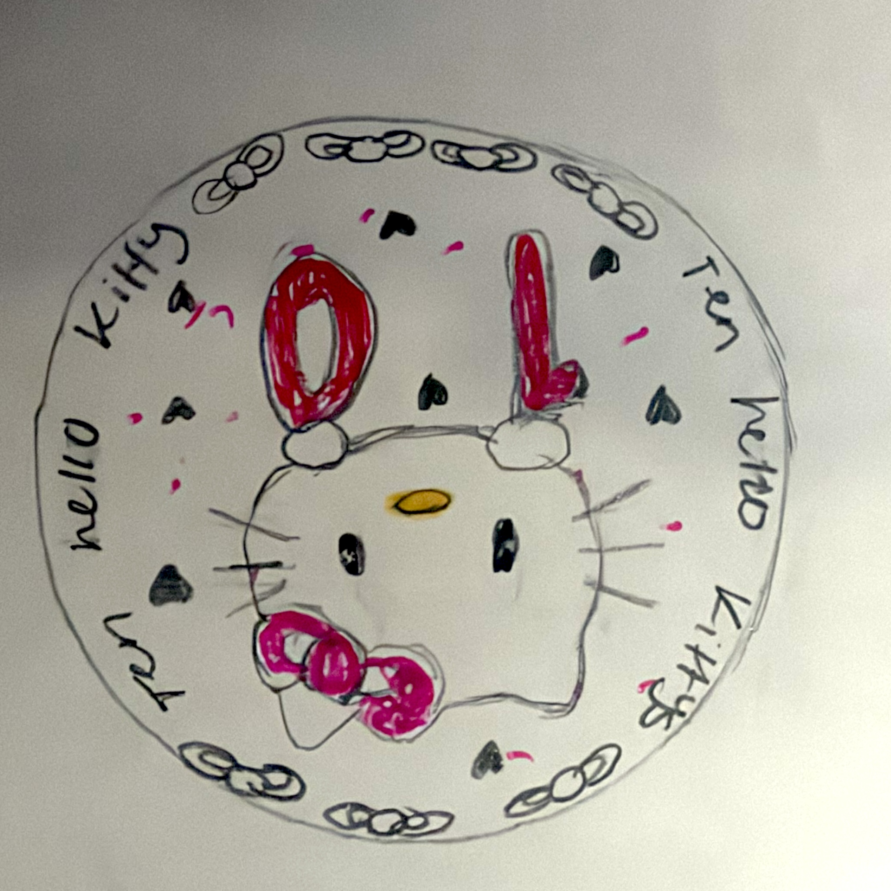
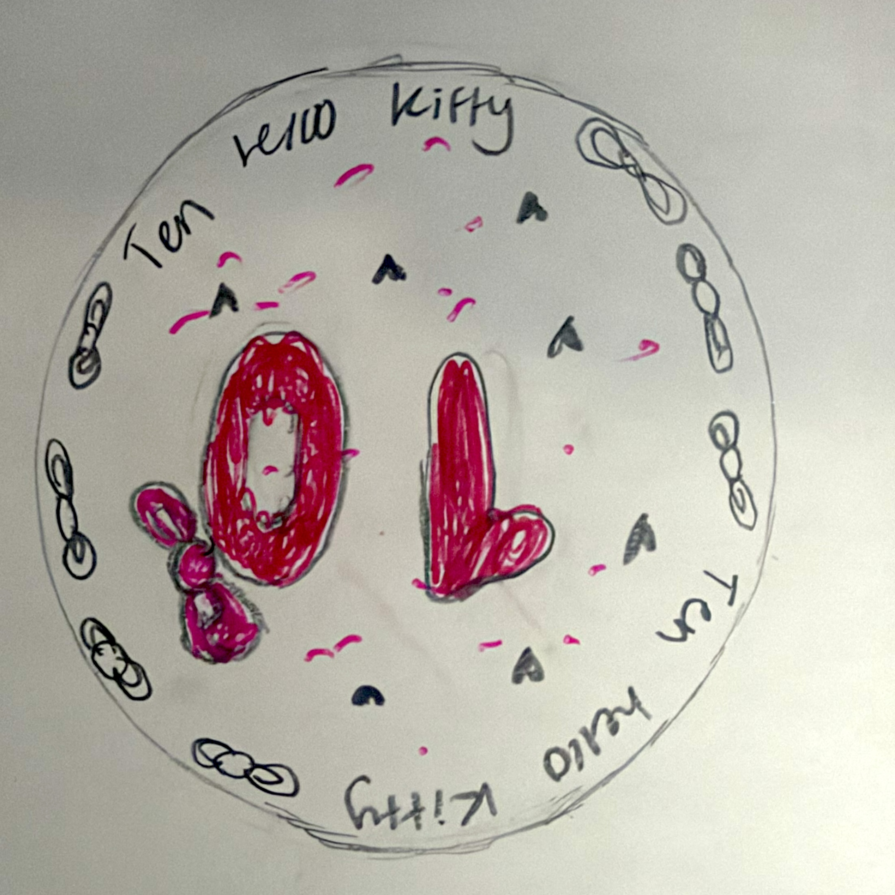
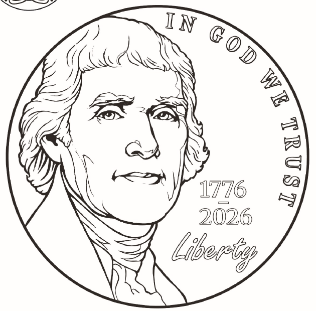
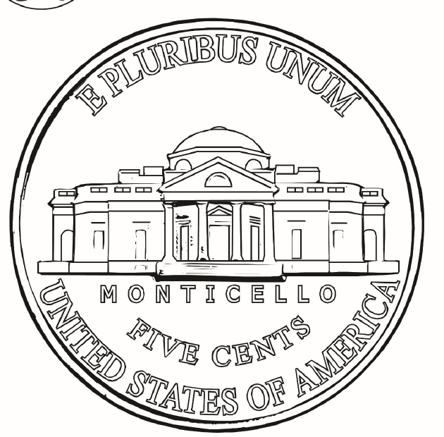

🪙 SCHOOL COIN STUDIO
Design a school coin!
Make your coin’s value and school symbol easy to recognize.
Your drawing becomes the plan for your Tinkercad coin next class.
👀 Student-made example


Two sides, the same value, and matching details. Use your own school symbols.
Student artwork. Photos shared by your teacher.
Another reference: a real coin
U.S. Mint nickel drawings. Notice the rim, symbol, and value.


U.S. Mint Coin Classroom✏️ Make your coin
Imagine a coin for the school store.
- Draw two large circles. Label them Front and Back.
- Choose one value, such as 1 or 5 school coins. Write it clearly.
- Add a school symbol and school colors. Keep shapes simple enough to build in 3D.
✅ Ready to turn in?
☐ Both sides drawn
☐ Value easy to read
☐ school symbol and school colors
Words + sentence starter
coin = monedavalue = valorsymbol = símbolofront = frenteback = reversoraised = elevadorecessed = hundido
Start your reflection: My coin represents our school with ___. In 3D, ___ will stick out or be pressed in because ___.
📸 Turn it in here
- Upload a clear photo of both drawings to this assignment.
- In submission comments, write 2–3 sentences: What would change when you build your coin in 3D? Which detail would stick out or be pressed in?
Optional extra credit: draw a second coin with a different value, front and back.
🎥 Help uploading your photo
Open video in a new tab
🪙 ESTUDIO DE MONEDAS ESCOLARES
¡Diseña una moneda de tu escuela!
Haz que el valor y el símbolo escolar de tu moneda se reconozcan fácilmente.
Tu dibujo será el plan para construir una moneda en Tinkercad en la próxima clase.
👀 Ejemplo de un estudiante
Dos lados, el mismo valor y detalles que combinan. Usa tus propios símbolos de tu escuela.
Arte de un estudiante. Fotos compartidas por tu maestra.
Otra referencia: una moneda real
Dibujos del níquel de la Casa de la Moneda de EE. UU. Observa el borde, el símbolo y el valor.
U.S. Mint Coin Classroom✏️ Diseña tu moneda
Imagina una moneda para la tienda escolar de tu escuela.
- Dibuja dos círculos grandes. Escribe Frente y Reverso.
- Elige un valor, como 1 o 5 monedas escolares. Escríbelo claramente.
- Añade un símbolo de tu escuela y colores escolares. Usa formas sencillas que puedas construir en 3D.
✅ ¿Lista para entregar?
☐ Ambos lados dibujados
☐ Valor fácil de leer
☐ Símbolo de tu escuela y colores escolares
Palabras + inicio de oración
coin = monedavalue = valorsymbol = símbolofront = frenteback = reversoraised = elevadorecessed = hundido
Empieza tu reflexión: Mi moneda representa a mi escuela con ___. En 3D, ___ sobresaldrá o quedará hundido porque ___.
📸 Entrégala aquí
- Sube una foto clara de ambos dibujos a esta tarea.
- En los comentarios del envío, escribe 2–3 oraciones: ¿Qué cambiaría al construir tu moneda en 3D? ¿Qué detalle sobresaldría o quedaría hundido?
Crédito extra opcional: dibuja otra moneda de diferente valor, con frente y reverso.
🎥 Ayuda para subir tu foto
Abrir video en otra pestaña